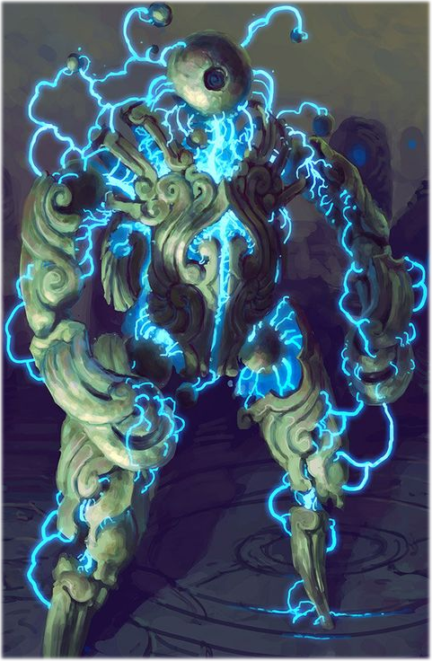

The true form and nature of this being is quite literally shrouded in mystery, and this is thanks to its unnatural affinity for lustrous things as well as its habit of covering itself in them, a strange trait even for a creature of the X'Tal collective.
Due to what could be presumed as a fragile constitution, the Vitreom uses its psyker energies to warp almost any and all material it collects into a chimeric shell of the different glasses and minerals that it comes across, creating a makeshift defense to make up for what it naturally lacks. Despite its collectionist habits, it makes sure to carefully choose what materials it covers itself with based on its preferred tactics. Soldiers with particularly interesting armour will find their corpses stripped of any decoration that may have been of worth to their fellow brethren, and grafted neatly onto the Vitreom's shell as a sort of trophy.
